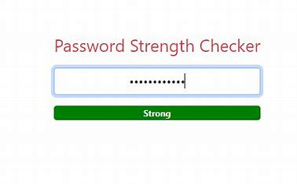

KeyLogger
The Keylogger project delves into the realm of cybersecurity, exploring the functionality of capturing and logging keystrokes on a computer system. Through this project, I developed a robust application capable of discreetly recording user input, providing insights into user behavior and potential security vulnerabilities. The project involved implementing advanced techniques in programming and cybersecurity to ensure the tool's effectiveness and reliability.
Password Strength Tester
The Password Strength Tester project addresses the critical aspect of cybersecurity by evaluating the strength of user passwords. This project involved creating a sophisticated tool capable of analyzing password complexity and resilience against various hacking techniques. By utilizing algorithms and best practices in password security, the tool provides users with valuable feedback on enhancing their online security posture.
Network Traffic Analyzer
The Network Traffic Analyzer project offers a deep dive into network security and data analysis, providing insights into network traffic patterns and potential security threats. Through this project, I developed a comprehensive tool capable of capturing, dissecting, and analyzing network packets in real-time. By leveraging packet sniffing techniques and network protocols, the analyzer enables users to detect anomalies, identify potential threats, and optimize network performance.